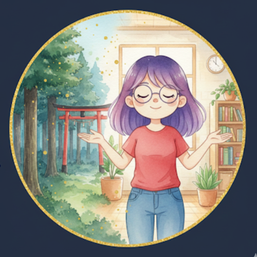
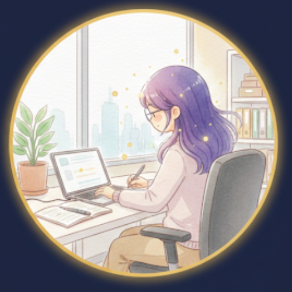
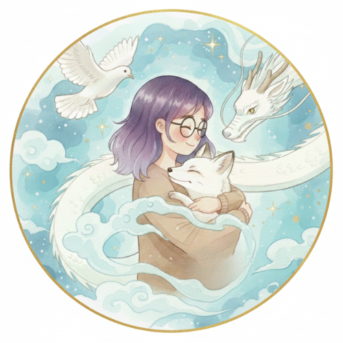

見えないものを
現実で使える形にする
オカルトかーちゃん

世界は
今見えている範囲だけじゃない
青森県の不思議な伝承が残る、小さな村で生まれ育ちました
昔から、知らない土地へ行くこと、その土地の文化や歴史に触れることが好きでした
中学卒業後、親元を離れ様々な土地で暮らし
人や文化、さまざまな考え方に出会ってきました
振り返ると、知らない世界を
自分の目で見てみたいという好奇心は
昔からあまり変わっていません

遠回りしながら
自分の「好き」を取り戻してきた
貿易を学びたくて県外まで行ったのに、夢中になったのはヨットでした
高校は中退したけれど、「海と船が好き」は残って、ずっと後になって船の仕事につながりました
服屋で働いた経験から残ったのは、服そのものよりも
「すでにあるものの魅力を、どう伝えるか」という感覚でした
そして結婚して、何かに夢中になることも、自分の「好き」を追いかけることも
やめちゃって
それまで好奇心のままに動いていた自分を、一度封印しました
なんやかやあって、離婚
そこから生活を立て直して、最初に取り戻しに行った「好き」が、中学生の頃から好きだったCharaちゃんでした
赤坂BLITZでのライブに、子ども二人を子乗せ自転車に乗せて爆走！
ライブを見て、笑って、子どもたちも楽しそうで
「楽しいって、これだよな」と思いました
思っていたところとは違う場所に着いても、
そこで拾ったものが、あとから別のところにつながる
振り返ると、私の人生にはそんなことが何度もあります

見えないものを
現実で使えるかたちにする
不思議ですが、好奇心を追いかけて転がっていくうちに、自分から探しに行かなくても、いろいろな「好奇心の素」が外から飛び込んでくるようになりました
その流れの中で、チャネリングにも出会いました
見えないものを、現実で使える形にする
それが、今のオカルトかーちゃんの仕事です
セッションでは、チャネリングで視えたことをお伝えしながら
これまで見えていなかった視点を加え、いま置かれている状況を一緒に見ていきます
そこから何を受け取り、現実の中でどう活かしていくのか
対話を重ねながら、一緒に紐解いていきます